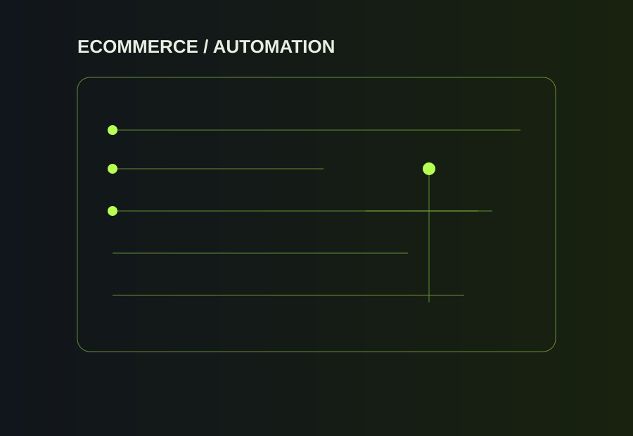

Role overview
Joined on 13 May 2026. The role connects digital product operations with physical warehouse execution, covering SKU/product data, inventory, purchasing coordination, vendor workflows, packing and dispatch.
Working across a wholesale e-commerce operation where product data, purchasing, inventory, office workflows and warehouse execution meet.

Joined on 13 May 2026. The role connects digital product operations with physical warehouse execution, covering SKU/product data, inventory, purchasing coordination, vendor workflows, packing and dispatch.
Product and SKU workflows; inventory monitoring; purchasing coordination; vendor/product workflow support; operational spreadsheets; warehouse coordination; packing and dispatch; website and app bug rectification and troubleshooting; on-page SEO; digital marketing; and Meta Ads.
Build practical Google Sheets + Apps Script automation around repetitive operational work, including controlled data flows, image/product handling, retries, caching, locks and backup-oriented workflows.
Separately from the day-to-day Multybyte role, Prince has built and integrated a Supabase backend for a private media-driven website, working with authentication, PostgreSQL data, Storage, Row Level Security and an authenticated admin upload/publish flow.
Ability to work across the full operational chain rather than only one isolated task: data → purchasing → inventory → warehouse → dispatch → digital systems.
Each role adds a different layer to Prince's operating experience — customer communication, order flow, inventory, e-commerce management and automation.
Explore all experience ↗